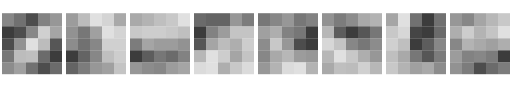

An ONNX model file is one Protocol
Buffers message, a ModelProto: the network’s graph, its
operators and every trained weight. PyTorch, TensorFlow and scikit-learn
all export to it, and runtimes from phones to browsers load it. Because
it is plain protobuf, zuproto can read one without any machine-learning
library. This article opens a small handwritten-digit classifier and
looks at its layers and weights.
The output below comes from a run on 27 October 2026. The code is not run when the site is built.
The schema
The schema is onnx.proto, from the onnx repository.
protoc, the protobuf compiler, turns it into a descriptor
set, which is what zuproto reads. zuproto itself does not need
protoc: on macOS, brew install protobuf; on
Debian and Ubuntu, apt install protobuf-compiler.
dir <- tempfile("onnx-")
dir.create(dir)
proto <- file.path(dir, "onnx.proto")
desc <- file.path(dir, "onnx.binpb")
download.file(
"https://raw.githubusercontent.com/onnx/onnx/v1.23.2/onnx/onnx.proto",
proto,
quiet = TRUE
)
system2("protoc", c(
paste0("--proto_path=", dir),
paste0("--descriptor_set_out=", desc),
proto
))
pool <- proto_pool(desc)The model
The model is MNIST from the ONNX Model Zoo: a small convolutional network that reads a 28 by 28 grey image of a digit. The file is 26 kB.
model <- file.path(dir, "mnist-12.onnx")
download.file(
paste0(
"https://media.githubusercontent.com/media/onnx/models/",
"c5cae0f1942c8d7727372c7b1f6b485aa39e4421/",
"validated/vision/classification/mnist/model/mnist-12.onnx"
),
model,
mode = "wb",
quiet = TRUE
)
m <- proto_decode(model, "onnx.ModelProto", pool, defaults = FALSE)defaults = FALSE leaves out the fields the file does not
set, which keeps the result small. Everything except the graph is
metadata: who wrote the file, and which version of the ONNX operator set
it uses.
The graph as a table
The graph is a list of nodes. Each node applies one operator to named inputs and writes named outputs, and the names wire the nodes together. A data frame with one row per node reads like the network’s layer list.
g <- m$graph
nodes <- data.frame(
name = vapply(g$node, \(n) n$name, ""),
op = vapply(g$node, \(n) n$op_type, ""),
inputs = vapply(g$node, \(n) paste(n$input, collapse = ", "), ""),
output = vapply(g$node, \(n) paste(n$output, collapse = ", "), "")
)
nodes[, c("name", "op", "inputs")]
#> name op
#> 1 Convolution28 Conv
#> 2 Plus30 Add
#> 3 ReLU32 Relu
#> 4 Pooling66 MaxPool
#> 5 Convolution110 Conv
#> 6 Plus112 Add
#> 7 ReLU114 Relu
#> 8 Pooling160 MaxPool
#> 9 Times212_reshape0 Reshape
#> 10 Times212_reshape1 Reshape
#> 11 Times212 MatMul
#> 12 Plus214 Add
#> inputs
#> 1 Input3, Parameter5
#> 2 Convolution28_Output_0, Parameter6
#> 3 Plus30_Output_0
#> 4 ReLU32_Output_0
#> 5 Pooling66_Output_0, Parameter87
#> 6 Convolution110_Output_0, Parameter88
#> 7 Plus112_Output_0
#> 8 ReLU114_Output_0
#> 9 Pooling160_Output_0, Pooling160_Output_0_reshape0_shape
#> 10 Parameter193, Parameter193_reshape1_shape
#> 11 Pooling160_Output_0_reshape0, Parameter193_reshape1
#> 12 Times212_Output_0, Parameter194Operator settings are attributes. A string attribute is
bytes in the schema, so it decodes to a raw vector.
Inputs and outputs
A tensor’s element type is an int32 in the schema,
holding a number from the TensorProto.DataType enum.
proto_enums() turns the number into its name.
dtypes <- proto_enums(pool, "onnx.TensorProto.DataType")
head(dtypes)
#> name number
#> 1 UNDEFINED 0
#> 2 FLOAT 1
#> 3 UINT8 2
#> 4 INT8 3
#> 5 UINT16 4
#> 6 INT16 5
describe <- function(v) {
t <- v$type$tensor_type
data.frame(
name = v$name,
type = dtypes$name[match(t$elem_type, dtypes$number)],
shape = paste(vapply(t$shape$dim, \(d) d$dim_value, 0), collapse = " x ")
)
}
do.call(rbind, lapply(c(g$input, g$output), describe))
#> name type shape
#> 1 Input3 FLOAT 1 x 1 x 28 x 28
#> 2 Plus214_Output_0 FLOAT 1 x 10The input is one image of one channel, 28 by 28 pixels; the output is ten scores, one per digit.
The weights
The trained weights are the graph’s initializers, tensors stored in
the file. ONNX keeps the numbers in a typed field
(float_data, int64_data) or as packed
little-endian bytes (raw_data); this file uses the typed
fields. A small helper turns either into an R array.
tensor_array <- function(t) {
values <- if (length(t$raw_data) > 0) {
readBin(t$raw_data, "double", n = prod(t$dims), size = 4, endian = "little")
} else if (length(t$float_data) > 0) {
t$float_data
} else {
t$int64_data
}
# ONNX stores tensors row-major, R arrays are column-major.
if (length(t$dims) > 1) {
aperm(array(values, rev(t$dims)))
} else {
values
}
}
weights <- lapply(g$initializer, tensor_array)
names(weights) <- vapply(g$initializer, \(t) t$name, "")
shape <- \(w) paste(if (is.null(dim(w))) length(w) else dim(w), collapse = " x ")
vapply(weights, shape, "")
#> Parameter193 Parameter87
#> "16 x 4 x 4 x 10" "16 x 8 x 5 x 5"
#> Parameter5 Parameter6
#> "8 x 1 x 5 x 5" "8 x 1 x 1"
#> Parameter88 Pooling160_Output_0_reshape0_shape
#> "16 x 1 x 1" "2"
#> Parameter193_reshape1_shape Parameter194
#> "2" "1 x 10"
sum(lengths(weights))
#> [1] 5998The network has under six thousand weights. The first convolution has eight filters of 5 by 5 pixels; drawn as images, they are the patterns the network looks for in a digit.
filters <- weights[["Parameter5"]] # 8 x 1 x 5 x 5
op <- par(mfrow = c(1, 8), mar = c(0.2, 0.2, 0.2, 0.2))
for (k in 1:8) {
w <- filters[k, 1, , ]
image(t(w[5:1, ]), col = gray.colors(32), axes = FALSE, asp = 1)
}
plot of chunk filters
par(op)Writing a model back
proto_encode() is the inverse of
proto_decode(). Here the model gains a description and a
metadata entry, and is written to a new file. ONNX’s own checker accepts
the file, and onnxruntime gives the same scores for it as for the
original.
m$doc_string <- "MNIST digit classifier, annotated in R"
m$metadata_props <- list(list(key = "source", value = "ONNX Model Zoo"))
out <- file.path(dir, "mnist-annotated.onnx")
writeBin(proto_encode(m, "onnx.ModelProto", pool), out)
again <- proto_decode(out, "onnx.ModelProto", pool, defaults = FALSE)
again$doc_string
#> [1] "MNIST digit classifier, annotated in R"
identical(again$graph, m$graph)
#> [1] TRUE